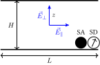

Effet d'un champ électrique sur la structure et la dynamique de suspensions colloïdales confinées : étude numérique par simulation
S.C.
Introduction
Suspensions colloïdales
- Applications : biologie, alimentaire, nanotechnologie, etc
- Flexibilité : modulation des interactions entre colloïdes et des propriétés du milieu, de la géométrie et du champ extérieur
- Généricité : étude et élaboration de colloïdes de différentes tailles (dizaine de nanomètres au micromètres) → large gamme de temps de réponse.
Situation physique
PINBI : un mélange binaire instable confiné et dans lequel une des espèces est dipolaire (couplage)- confinement : existe dans la réalité, comportement sans équivalent en phase volumique (structuration, mouillage, désorption)
- champ électrique : manipulation de l'état du système, moyen souple
Modèle
SA, SD : sphères apolaires et dipolaires
mélange binaire : une espèce dipolaire et l'autre non, tout : interaction à courte portée : simplification : uniquement répulsive
mélange HS + dip : à diamètre non-additif (MD : assouplissement du potentiel à courte portée : WCA)
Contexte, Motivation, Modèle
Travaux antérieux : PINBI : inversion de population
Approfondir la situation à l'équilibre deux murs : sans interface phase volumique
Qu'en est-il de la dynamique ? Nouveauté : dynamique pour applications, géométrie plus réaliste : avec interface slab/bulk
Schéma
cf. S.A. e.g.- coquille vide → pas de moment dipolaire
- l'autre : pleine, $\dip$ permanant ou induit
- stabilisation stérique : chaînes de polymère : si nature différente : non-additif : la règle
Méthodes de simulation
Introduction
- Objectif : étude d'un système comportant un grand nombre de particules en interactions
- Fondement théorique : mécanique statistique
- Mise en œuvre : simulations numériques
Méthodes de simulation
- Modélisation et calcul des interactions
- Evolution à partir d'un état initial
- Reproductibilité des résultats
Monte-Carlo Metropolis
Echantillionnage préférentiel
- $p(x)$ densité de probabilité de la configuration $x$ : $$\langle a \rangle_p = \int \dif{x}\ p(x) a(x)$$
- $x_1, ..., x_\ct{M}$ configurations pondérés et $\ct{M} \to \infty$ : $$\frac{1}{\ct{M}} \sum_{\ct{i}=1}^\ct{M} a(x_\ct{i}) \longrightarrow \langle a \rangle_p$$
Monte-Carlo Metropolis
Algorithm de Metropolis
$A[x \to y]$ probabilité d'acceptation :
if (acceptation_probability < 1.) then
call random_number(rand)
if (rand < acceptation_probability) then
success = .true.
else
success = .false.
end if
else
success = .true.
end if
Dynamique moléculaire
Verlet vitesse :

|
|
Dynamique de Langevin
\[ m \ddrt{\vec{v}(t)}{t} = -\frictionCoefficient \vec{v}(t) + \vec{\randomForce}(t) + \vec{F}_\text{ext} \]-
Un théorème de fluctuation-dissipation relie :
- $\frictionCoefficient$ : le coefficient de frottement (macroscopique)
- $\vec{\randomForce}$ : la force aléatoire (microscopique)
Loi de Stokes pour une sphère de diamètre $\diameter$ : $\frictionCoefficient = 3\pi \dynamicViscosity \diameter$.
Sommes d'Ewald
Effet d'un champ sur un mélange confiné de sphères dipolaires et apolaires : propriétés à l'équilibre
Modèle
Géométrie, composition et interaction à courte portée
|  |
|
Première étape : MolPhys
Modèle Formule Méthodes : MC (code homemade) Variables de contrôles Sélection des principaux résultatsModèle
Interactions dipolaires et champ extérieur
- $u(\vec{r}_\ct{ij}, \vec{\dip}_\ct{i}, \vec{\dip}_\ct{j}) = \frac{1}{4 \pi \permittivity} \left[ \frac{\vec{\dip}_\ct{i} \cdot \vec{\dip}_\ct{j}}{r_\ct{ij}^3} - 3 \frac{(\vec{\dip}_\ct{i} \cdot \vec{r}_\ct{ij}) (\vec{r}_\ct{ij} \cdot \vec{\dip}_\ct{j})}{r_\ct{ij}^5} \right]$
- Champ : nul, perpendiculaire ou parallèle
Equilibres de phases
Courbes de coexistence obtenues par GEMC

bulk : pour différents $\nonAdditivity$ |
 slab
slab
|
- La non-additivité favorise la démixtion.
- Les murs stabilisent le mélange.
Champ nul
Champ perpendiculaire
Champ parallèle
Synthèse
Effet d'un champ sur un mélange confiné de sphères dipolaires et apolaires : aspects dynamiques
Modèle : Géométrie de confinement

Interfaces entre le réservoir de particules et le milieu confiné.
Modèle : Potentiel d'interaction à courte portée

|
|
Modèle : champ extérieur

|
|
Méthodes de simulation
- MC : plmc
- DM : Espresso
Comparaison Monte-Carlo - dynamique moléculaire
 champ nul, SD
champ nul, SD
|
 champ nul, SA
champ nul, SA
|
 champ allumé, SD+SA
champ allumé, SD+SA
|
- Accord MC / MD, réversibilité du système
- Champ appliqué : structuration des dipôles
Système réversible

Système réversible

Système réversible

Dynamique de l'inversion de population sous champ

|
|
Animation du remplissage et du vidage

Loi d'échelle en fonction de $\frictionCoefficient$

|

|
- Linéarité : $t_\uparrow + t_\downarrow \propto \frictionCoefficient^\ast$
- Extrapolation : pour $\frictionCoefficient^\ast = 460$, $t_\uparrow + t_\downarrow = 1500 \mathrm{s}$
- Champs croissants : saturation prématurée